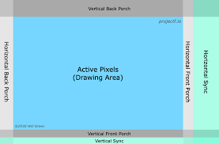

Lab Notes - Introductions
The documentation is currently under construction and is being developed along with a live streaming narrative it is very much a work in progress, you can already find some interesting stuff in the examples section.
Setup
Ice LogicDeck setup BlackCrab Firmware
Ice LogicDeck Hardware
The Ice LogicDeck (ILD) Hardware consists of modular tiles fitted to the main carrier board as required for the given development project. Onboard the main ILD carrier board are the Microcontroller, the FPGA some SPI Flash and connectors.
Connectivity
The ILD has two Usb connectors, the first is a Usb-C configured as a USB CDC serial device. This can allow programming of the microcontroller, FPGA and flash, along with uart and monitoring features depending on the required mode.
There is a second Usb-C (Usb-PD) Connector which operates as a high Power over Usb delivery system operating from 5 to 20 volts in order to be able to power a large range of modular tiles from simple led drivers through to small motor and power-train devices. An auxiliary power supply scheme is also provided for the more extreme power delivery requirements across the tiles.
Operating Modes
Mode selection is achieved via the 'Mode' button, if depressed on power up it switches the device into Usb-DFU mode which enables the firmware to be updated from the PC host. Normal startup places the device into Development mode. In development mode the device intelligently listens to Usb traffic for new deck application, FPGA updates whilst concurrently relaying monitor, logging and error information.
A third Advanced mode can be entered pressing the mode button during normal operation. This mode enables additional sub-command modes including terminal , test and flash for making things permanent or adding ROM data etc.. one can switch back to development mode simple by pressing the mode button once more.
Status and feedback
There is an RGB led on board which can provide feedback and status of the board's mode and operation. In normal mode this is unlit. if and application or FPGA image is uploaded it will change to red and extinguish on successful completion. If it remains red it will normally be due to either a hardware fault or bad FPGA synthesis. If the mode changes it will illuminate green and change to amber during programing and back to green afterwards, again if it remains amber it will likely be a fault. A third state is possible when the FPGA synthesis drives the blue part of the led for example in a blinky test, the colour will the blink between the either blue and off or blue and the mode colour probably blue and turquoise.
There is also a 1.27mm pitch 10pin, Arm SWD debug socket adjacent to the Usb-PD if you need to debug what is running on the Microcontroller.
In addition to the modular tiles there is an optional Mezzanine Tile which can expand the ILD to add useful features like extra RAM, flash, lcd display and Wi-Fi among other things, check out the Mezzanine section for more information of these options.
Setting up Ice LogicDeck - Drivers and firmware:
DFU
USB-CDC
Power Delivery
Tools
Installing the HDL tools:
Yosys
Amaranth
BlackCrab
Tiles
Led test example
We start with a standard tile resource abstraction to work with a protoboard that I have added 12 LEDS t0. We then run some basic Amaranth python HDL to exercise the leds
from amaranth import *
from amaranth.build import *
from IceLogicDeck import *
leds12_tile = [
Resource("leds12", 0,
Subsignal("leds", Pins("1 2 3 4 5 6 7 8 9 10 11 12", dir="o", conn=("tile",2)), Attrs(IO_STANDARD="SB_LVCMOS")))
]
class LEDTileTest(Elaboratable):
def elaborate(self, platform):
leds12 = Cat([l for l in platform.request("leds12")])
timer = Signal(38)
m = Module()
m.d.sync += timer.eq(timer + 1)
m.d.comb += leds12.eq(timer[-15:-1])
return m
if __name__ == "__main__":
platform = IceLogicDeckPlatform()
platform.add_resources(leds12_tile)
platform.build(LEDTileTest(), do_program=True)
Blinky
Simple Amaranth blinky using the onboard LED
Simple led blinky example using the blue part of the rgb led on the Ice LogicDeck.
from amaranth import *
from IceLogicDeck import *
class Blink(Elaboratable):
def elaborate(self, platform):
led = platform.request("led")
timer = Signal(24)
m = Module()
m.d.sync += timer.eq(timer + 1)
m.d.comb += led.eq(timer[-1])
return m
if __name__ == "__main__":
platform = IceLogicDeckPlatform()
platform.build(Blink(), do_program=True)
Mezzanine Expansion
The Mezzanine expansion tile is available in different configurations:
Basic Mezzanine
- Wi-Fi including MicroPython
Advanced Mezzanine
Configuration includes Basic features and adds the following:
- IPS LCD 1.3"
- 64Mbit HyperRam
- 128Mbit HyperFlash
Super Mez
PWR: 3 SWD/JTAG: 3/4 USB: 2 DCMI/HRF: 11/12 QSPIE,CLK,CRS,DNE,RX,TX: 12 5(ADC1,2,3,INT),2(SCL,SDA),RST,EN: 26 rgb: dne,mode,tx Mez requires 2*2x25 1.27mm Assumes flash on uc mez or hyperflash 128: 238 512: 88+265
Seven Segment Tile
Here is the Top level AHDL Seven_segment.py
Shown below is the Tile example class example we derived from the BlackIce Mx nMigen examples for the seven segment tile.
from amaranth import *
from IceLogicDeck import *
from Tiles.seven_seg_tile import SevenSegController, tile_resources
TILE = 1
class SevenSegExample(Elaboratable):
def elaborate(self, platform):
# Add 7-segment controller
m = Module()
m.submodules.seven = seven = SevenSegController()
# Get pins
seg_pins = platform.request("seven_seg_tile")
leds7 = Cat([seg_pins.a, seg_pins.b, seg_pins.c, seg_pins.d,
seg_pins.e, seg_pins.f, seg_pins.g])
# Timer
timer = Signal(40)
m.d.sync += timer.eq(timer + 1)
# Connect pins
m.d.comb += [
leds7.eq(seven.leds)
]
# Set pins for each digit to appropriate slice of time to count up in hex
for i in range(3):
# Each digit refreshed at at least 100Hz
m.d.comb += seg_pins.ca[i].eq(timer[17:19] == i)
with m.If(seg_pins.ca[i]):
m.d.comb += seven.val.eq(timer[((i - 3) * 4) - 5:((i - 3) * 4) - 1])
return m
if __name__ == "__main__":
platform = IceLogicDeckPlatform()
platform.add_resources(tile_resources(TILE))
platform.build(SevenSegExample(), do_program=True)
The Seven Segment Tile Driver
The tile driver abstracts the tile resource pinouts handling the low level Hex->7-segment encoding.
from typing import List
from amaranth import *
from amaranth.build import *
PINMAP = {"a": "6", "b": "8", "c": "12", "d": "10", "e": "7", "f": "5", "g": "4", "dp": "9", "ca": "3 2 1"}
def tile_resources(tile: int) -> List:
signals = [
Subsignal(signal,
Pins(pin, invert=True, dir="o", conn=("tile", tile)),
Attrs(IO_STANDARD="SB_LVCMOS")
) for signal, pin in PINMAP.items()
]
return [Resource("seven_seg_tile", 0, *signals)]
class SevenSegController(Elaboratable):
def __init__(self):
self.val = Signal(4)
self.leds = Signal(7)
def elaborate(self, platform):
m = Module()
table = Array([
0b0111111, # 0
0b0000110, # 1
0b1011011, # 2
0b1001111, # 3
0b1100110, # 4
0b1101101, # 5
0b1111101, # 6
0b0000111, # 7
0b1111111, # 8
0b1101111, # 9
0b1110111, # A
0b1111100, # B
0b0111001, # C
0b1011110, # D
0b1111001, # E
0b1110001 # F
])
m.d.comb += self.leds.eq(table[self.val])
return m
Audio and Video Tile
VGA VGA Driver and Timings AHDL
from typing import List
from amaranth import *
from amaranth.build import *
from .vga import *
PINMAP = {"hs": "3", "vs": "4", "red": "11 7 6", "green": "12 10 5", "blue": "9 8", "right": "2", "left": "1"}
def tile_resources(tile: int) -> List:
signals = [
Subsignal(signal,
Pins(pin, invert=False, dir="o", conn=("tile", tile)),
Attrs(IO_STANDARD="SB_LVCMOS")
) for signal, pin in PINMAP.items()
]
return [Resource("av_tile", 0, *signals)]
# Analogue Audio Video Controller
class AAVController(Elaboratable):
def __init__(self):
pass
def elaborate(self, platform):
m = Module()
return m
Audio
Video
How a VGA frame is divided

The VGA Signals

VGA Example AHDL
from amaranth import *
from IceLogicDeck import *
from Tiles.AAVC_tile import tile_resources
from Tiles.vga import VGADriver, VGATestPattern, VGATiming, vga_timings
from Tiles.pll import PLL
from Tiles.audio import SquareWave
TILE = 1
class AVExample(Elaboratable):
def __init__(self,
timing: VGATiming, # VGATiming class
xadjustf=0, # adjust -3..3 if no picture
yadjustf=0): # or to fine-tune f
# Configuration
self.timing = timing
self.xadjustf = xadjustf
self.yadjustf = yadjustf
def elaborate(self, platform):
m = Module()
clk_in = platform.request(platform.default_clk, dir='-')[0]
# Clock generator.
m.domains.sync = cd_sync = ClockDomain("sync")
m.d.comb += ClockSignal().eq(clk_in)
# Create a Pll to generate the pixel clock
m.submodules.pll = pll = PLL(freq_in_mhz=int(platform.default_clk_frequency / 1000000),
freq_out_mhz=int(self.timing.pixel_freq / 1000000),
domain_name="pixel")
# Add the pixel clock domain to the module, and connect input clock
m.domains.pixel = cd_pixel = pll.domain
m.d.comb += pll.clk_pin.eq(clk_in)
platform.add_clock_constraint(cd_pixel.clk, self.timing.pixel_freq)
# Create VGA instance with chosen timings
m.submodules.vga = vga = VGADriver(
self.timing,
bits_x=16, # Play around with the sizes because sometimes
bits_y=16 # a smaller/larger value will make it pass timing.
)
# Create test pattern
m.submodules.pattern = pattern = VGATestPattern(vga)
# enable the clock and test signal
m.d.comb += vga.i_clk_en.eq(1)
# Audio waveform generator
m.submodules.sqw = sqw = SquareWave()
# Grab our VGA Tile resource
av_tile = platform.request("av_tile")
# Hook it up to the VGA instance
m.d.comb += [
av_tile.red.eq(vga.o_vga_r[5:]),
av_tile.green.eq(vga.o_vga_g[5:]),
av_tile.blue.eq(vga.o_vga_b[6:]),
av_tile.hs.eq(vga.o_vga_hsync),
av_tile.vs.eq(vga.o_vga_vsync),
av_tile.left.eq(sqw.left),
av_tile.right.eq(sqw.right)
]
return m
if __name__ == "__main__":
platform = IceLogicDeckPlatform()
platform.add_resources(tile_resources(TILE))
platform.build(AVExample(timing=vga_timings['1024x768@60Hz']), do_program=True)
VGA VGA Driver and Timings AHDL
from typing import NamedTuple
from amaranth import *
from amaranth.build import *
# Abstracts the VGA Frame timing sections
class VGATiming(NamedTuple):
x: int
y: int
refresh_rate: float
pixel_freq: int
h_front_porch: int
h_sync_pulse: int
h_back_porch: int
v_front_porch: int
v_sync_pulse: int
v_back_porch: int
# Generates a VGA picture from sequential bitmap data from pixel clock
# synchronous FIFO.
#
# The pixel data in i_r, i_g, and i_b registers
# should be present ahead of time.
#
# Signal 'o_fetch_next' is set high for 1 'pixel' clock
# period as soon as current pixel data is consumed.
# The FIFO should be fast enough to fetch new data
# for the new pixel.
class VGADriver(Elaboratable):
def __init__(self, timing: VGATiming,
bits_x = 10, # should fit resolution_x + hsync_front_porch + hsync_pulse + hsync_back_porch
bits_y = 10, # should fit resolution_y + vsync_front_porch + vsync_pulse + vsync_back_porch
):
# ClockEnable and Colour Pixel input signals
self.i_clk_en = Signal()
self.i_r = Signal(8)
self.i_g = Signal(8)
self.i_b = Signal(8)
# Frame Buffer timing signals
self.o_fetch_next = Signal()
self.o_beam_x = Signal(bits_x)
self.o_beam_y = Signal(bits_y)
# Output Blanking signals
self.o_vga_vblank = Signal()
self.o_vga_blank = Signal()
self.o_vga_de = Signal()
# Output signals for driving DAC/SYNC
self.o_vga_r = Signal(8)
self.o_vga_g = Signal(8)
self.o_vga_b = Signal(8)
self.o_vga_hsync = Signal()
self.o_vga_vsync = Signal()
# Timing constants
self.timing = timing
# Configuration
self.bits_x = bits_x
self.bits_y = bits_y
def elaborate(self, platform: Platform) -> Module:
m = Module()
# Constants
C_hblank_on = C(self.timing.x - 1, unsigned(self.bits_x))
C_hsync_on = C(self.timing.x + self.timing.h_front_porch - 1, unsigned(self.bits_x))
C_hsync_off = C(self.timing.x + self.timing.h_front_porch + self.timing.h_sync_pulse - 1, unsigned(self.bits_x))
C_hblank_off = C(self.timing.x + self.timing.h_front_porch + self.timing.h_sync_pulse + self.timing.h_back_porch - 1, unsigned(self.bits_x))
C_frame_x = C_hblank_off
# frame x = 640 + 16 + 96 + 48 = 800
C_vblank_on = C(self.timing.y - 1, unsigned(self.bits_y))
C_vsync_on = C(self.timing.y + self.timing.v_front_porch - 1, unsigned(self.bits_y))
C_vsync_off = C(self.timing.y + self.timing.v_front_porch + self.timing.v_sync_pulse - 1, unsigned(self.bits_y))
C_vblank_off = C(self.timing.y + self.timing.v_front_porch + self.timing.v_sync_pulse + self.timing.v_back_porch - 1, unsigned(self.bits_y))
C_frame_y = C_vblank_off
# frame y = 480 + 10 + 2 + 33 = 525
# refresh rate = pixel clock / (frame x * frame y) = 25 MHz / (800 * 525) = 59.52 Hz
# Internal signals
R_hsync = Signal()
R_vsync = Signal()
R_disp = Signal() # disp == not blank
R_disp_early = Signal()
R_vdisp = Signal()
R_blank_early = Signal()
R_vblank = Signal()
R_fetch_next = Signal()
CounterX = Signal(self.bits_x)
CounterY = Signal(self.bits_y)
R_blank = Signal()
with m.If(self.i_clk_en):
with m.If(CounterX == C_frame_x):
m.d.pixel += CounterX.eq(0)
with m.If(CounterY == C_frame_y):
m.d.pixel += CounterY.eq(0)
with m.Else():
m.d.pixel += CounterY.eq(CounterY + 1)
with m.Else():
m.d.pixel += CounterX.eq(CounterX + 1)
m.d.pixel += R_fetch_next.eq(R_disp_early)
with m.Else():
m.d.pixel += R_fetch_next.eq(0)
m.d.comb += [
self.o_beam_x.eq(CounterX),
self.o_beam_y.eq(CounterY),
self.o_fetch_next.eq(R_fetch_next),
]
# Generate sync and blank.
with m.If(CounterX == C_hblank_on):
m.d.pixel += [
R_blank_early.eq(1),
R_disp_early.eq(0)
]
with m.Elif(CounterX == C_hblank_off):
m.d.pixel += [
R_blank_early.eq(R_vblank),
R_disp_early.eq(R_vdisp)
]
with m.If(CounterX == C_hsync_on):
m.d.pixel += R_hsync.eq(1)
with m.Elif(CounterX == C_hsync_off):
m.d.pixel += R_hsync.eq(0)
with m.If(CounterY == C_vblank_on):
m.d.pixel += [
R_vblank.eq(1),
R_vdisp.eq(0)
]
with m.Elif(CounterY == C_vblank_off):
m.d.pixel += [
R_vblank.eq(0),
R_vdisp.eq(1)
]
with m.If(CounterY == C_vsync_on):
m.d.pixel += R_vsync.eq(1)
with m.Elif(CounterY == C_vsync_off):
m.d.pixel += R_vsync.eq(0)
m.d.pixel += R_blank.eq(R_blank_early)
m.d.pixel += R_disp.eq(R_disp_early)
m.d.comb += [
self.o_vga_r.eq(self.i_r),
self.o_vga_g.eq(self.i_g),
self.o_vga_b.eq(self.i_b),
self.o_vga_hsync.eq(R_hsync),
self.o_vga_vsync.eq(R_vsync),
self.o_vga_blank.eq(R_blank),
self.o_vga_de.eq(R_disp),
]
return m
# Generates a VGA Test Pattern
class VGATestPattern(Elaboratable):
def __init__(self, vga: VGADriver):
self.vga = vga
def elaborate(self, platform: Platform) -> Module:
W = Signal(8)
A = Signal(8)
T = Signal(8)
Z = Signal(6)
m = Module()
# Test pattern fundamentals
m.d.comb += [
A.eq(Mux(
(self.vga.o_beam_x[5:8] == 0b010) & (self.vga.o_beam_y[5:8] == 0b010),
0xFF, 0)),
W.eq(Mux(
(self.vga.o_beam_x[:8] == self.vga.o_beam_y[:8]),
0xFF, 0)),
Z.eq(Mux(
(self.vga.o_beam_y[3:5] == ~(self.vga.o_beam_x[3:5])),
0xFF, 0)),
T.eq(Repl(self.vga.o_beam_y[6], len(T))),
]
# Mux Emit rgb test pattern pixels unless within blanking period
with m.If(self.vga.o_vga_blank):
m.d.pixel += [
self.vga.i_r.eq(0),
self.vga.i_g.eq(0),
self.vga.i_b.eq(0),
]
with m.Else():
m.d.pixel += [
self.vga.i_r.eq((Cat(0b00, self.vga.o_beam_x[:6] & Z) | W) & (~A)),
self.vga.i_g.eq(((self.vga.o_beam_x[:8] & T) | W) & (~A)),
self.vga.i_b.eq(self.vga.o_beam_x[:8] | W | A),
]
return m
vga_timings = {
'640x350@70Hz': VGATiming(
x = 640,
y = 350,
refresh_rate = 70.0,
pixel_freq = 25_175_000,
h_front_porch = 16,
h_sync_pulse = 96,
h_back_porch = 48,
v_front_porch = 37,
v_sync_pulse = 2,
v_back_porch = 60),
'640x350@85Hz': VGATiming(
x = 640,
y = 350,
refresh_rate = 85.0,
pixel_freq = 31_500_000,
h_front_porch = 32,
h_sync_pulse = 64,
h_back_porch = 96,
v_front_porch = 32,
v_sync_pulse = 3,
v_back_porch = 60),
'640x400@70Hz': VGATiming(
x = 640,
y = 400,
refresh_rate = 70.0,
pixel_freq = 25_175_000,
h_front_porch = 16,
h_sync_pulse = 96,
h_back_porch = 48,
v_front_porch = 12,
v_sync_pulse = 2,
v_back_porch = 35),
'640x400@85Hz': VGATiming(
x = 640,
y = 400,
refresh_rate = 85.0,
pixel_freq = 31_500_000,
h_front_porch = 32,
h_sync_pulse = 64,
h_back_porch = 96,
v_front_porch = 1,
v_sync_pulse = 3,
v_back_porch = 41),
'640x480@60Hz': VGATiming(
x = 640,
y = 480,
refresh_rate = 60.0,
pixel_freq = 25_175_000,
h_front_porch = 16,
h_sync_pulse = 96,
h_back_porch = 48,
v_front_porch = 10,
v_sync_pulse = 2,
v_back_porch = 33),
'720x400@85Hz': VGATiming(
x = 720,
y = 400,
refresh_rate = 85.0,
pixel_freq = 35_500_000,
h_front_porch = 36,
h_sync_pulse = 72,
h_back_porch = 108,
v_front_porch = 1,
v_sync_pulse = 3,
v_back_porch = 42),
'768x576@60Hz': VGATiming(
x = 758,
y = 576,
refresh_rate = 60.0,
pixel_freq = 34_960_000,
h_front_porch = 24,
h_sync_pulse = 80,
h_back_porch = 104,
v_front_porch = 1,
v_sync_pulse = 3,
v_back_porch = 17),
'768x576@72Hz': VGATiming(
x = 758,
y = 576,
refresh_rate = 72.0,
pixel_freq = 42_930_000,
h_front_porch = 32,
h_sync_pulse = 80,
h_back_porch = 112,
v_front_porch = 1,
v_sync_pulse = 3,
v_back_porch = 21),
'768x576@75Hz': VGATiming(
x = 758,
y = 576,
refresh_rate = 75.0,
pixel_freq = 45_510_000,
h_front_porch = 40,
h_sync_pulse = 80,
h_back_porch = 120,
v_front_porch = 1,
v_sync_pulse = 3,
v_back_porch = 22),
'800x600@60Hz': VGATiming(
x = 800,
y = 600,
refresh_rate = 60.0,
pixel_freq = 40_000_000,
h_front_porch = 40,
h_sync_pulse = 128,
h_back_porch = 88,
v_front_porch = 1,
v_sync_pulse = 4,
v_back_porch = 23),
'848x480@60Hz': VGATiming(
x = 848,
y = 480,
refresh_rate = 60.0,
pixel_freq = 33_750_000,
h_front_porch = 16,
h_sync_pulse = 112,
h_back_porch = 112,
v_front_porch = 6,
v_sync_pulse = 8,
v_back_porch = 23),
'1024x768@60Hz': VGATiming(
x = 1024,
y = 768,
refresh_rate = 60.0,
pixel_freq = 65_000_000,
h_front_porch = 24,
h_sync_pulse = 136,
h_back_porch = 160,
v_front_porch = 3,
v_sync_pulse = 6,
v_back_porch = 29),
'1152x864@60Hz': VGATiming(
x = 1152,
y = 864,
refresh_rate = 60.0,
pixel_freq = 81_620_000,
h_front_porch = 64,
h_sync_pulse = 120,
h_back_porch = 184,
v_front_porch = 1,
v_sync_pulse = 3,
v_back_porch = 27),
'1280x720@60Hz': VGATiming(
x = 1280,
y = 720,
refresh_rate = 60.0,
pixel_freq = 74_250_000,
h_front_porch = 110,
h_sync_pulse = 40,
h_back_porch = 220,
v_front_porch = 5,
v_sync_pulse = 5,
v_back_porch = 20),
'1280x768@60Hz': VGATiming(
x = 1280,
y = 768,
refresh_rate = 60.0,
pixel_freq = 79_500_000,
h_front_porch = 64,
h_sync_pulse = 128,
h_back_porch = 192,
v_front_porch = 3,
v_sync_pulse = 7,
v_back_porch = 20),
'1280x768@60Hz CVT-RB': VGATiming(
x = 1280,
y = 768,
refresh_rate = 60.0,
pixel_freq = 68_250_000,
h_front_porch = 48,
h_sync_pulse = 32,
h_back_porch = 80,
v_front_porch = 3,
v_sync_pulse = 7,
v_back_porch = 12),
'1280x800@60Hz': VGATiming(
x = 1280,
y = 800,
refresh_rate = 60.0,
pixel_freq = 83_500_000,
h_front_porch = 72,
h_sync_pulse = 128,
h_back_porch = 200,
v_front_porch = 3,
v_sync_pulse = 6,
v_back_porch = 22),
'1280x800@60Hz CVT-RB': VGATiming(
x = 1280,
y = 800,
refresh_rate = 60.0,
pixel_freq = 71_000_000,
h_front_porch = 48,
h_sync_pulse = 32,
h_back_porch = 80,
v_front_porch = 3,
v_sync_pulse = 6,
v_back_porch = 14),
'1280x1024@60Hz': VGATiming(
x = 1280,
y = 1024,
refresh_rate = 60.0,
pixel_freq = 108e6,
h_front_porch = 48,
h_sync_pulse = 112,
h_back_porch = 248,
v_front_porch = 1,
v_sync_pulse = 3,
v_back_porch = 38),
'1366x768@60Hz': VGATiming(
x = 1366,
y = 768,
refresh_rate = 60.0,
pixel_freq = 85_500_000,
h_front_porch = 70,
h_sync_pulse = 143,
h_back_porch = 213,
v_front_porch = 3,
v_sync_pulse = 3,
v_back_porch = 24),
'1920x1080@30Hz': VGATiming(
x = 1920,
y = 1080,
refresh_rate = 30.0,
pixel_freq = 148_500_000//2,
h_front_porch = 88,
h_sync_pulse = 44,
h_back_porch = 148,
v_front_porch = 4,
v_sync_pulse = 5,
v_back_porch = 36),
'1920x1080@30Hz CVT-RB': VGATiming(
x = 1920,
y = 1080,
refresh_rate = 30.0,
pixel_freq = 73_000_000,
h_front_porch = 48,
h_sync_pulse = 32,
h_back_porch = 80,
v_front_porch = 3,
v_sync_pulse = 5,
v_back_porch = 9),
'1920x1080@30Hz CVT-RB2': VGATiming(
x = 1920,
y = 1080,
refresh_rate = 30.0,
pixel_freq = 70_208_000,
h_front_porch = 8,
h_sync_pulse = 32,
h_back_porch = 40,
v_front_porch = 3,
v_sync_pulse = 8,
v_back_porch = 6),
'1920x1080@60Hz': VGATiming(
x = 1920,
y = 1080,
refresh_rate = 60.0,
pixel_freq = 148_500_000,
h_front_porch = 88,
h_sync_pulse = 44,
h_back_porch = 148,
v_front_porch = 4,
v_sync_pulse = 5,
v_back_porch = 36),
}
Code we ported from Lawrie which in turn was built on Guztech's VGA for ULX3s